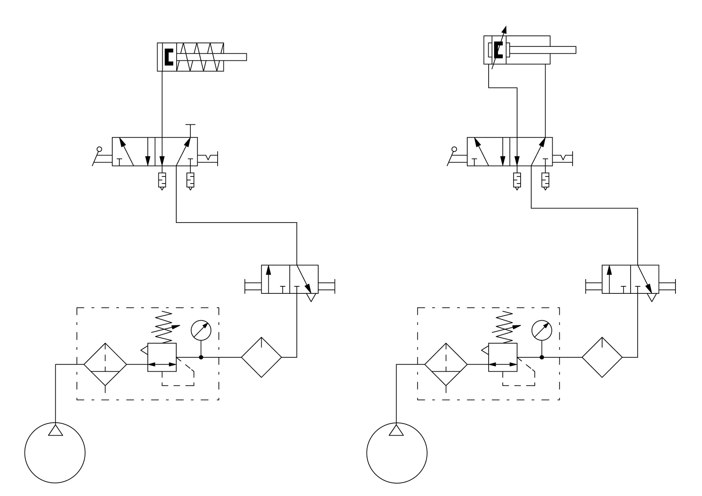

Pneumatic Circuit
Semester 5
Task
Pneumatic door control of a bus
The passenger door of a bus (for example a KSRTC bus or an airport bus) is opened and closed using compressed air. The driver operates a lever switch from the driver's seat, and the door opens and closes.
Using the components given, set up the pneumatic circuit for this door system and operate the door to open and close.
3D Model
How to use
- Pick a 10 mm or 4 mm tube from the bar below the model.
- Tap the first port, then the second port, to connect the tube.
- Switch the power ON at the wall switch (or the ⏻ Power button at the top of the lab).
- Open the sliding valve and move the 5/2 lever to operate the cylinder.
- Tap any part to see its name. Tap Parts to show the part letters.
Drag to rotate · Pinch or scroll to zoom · ⌂ returns to the full view · Use Full screen for more space
Engineering Drawing
